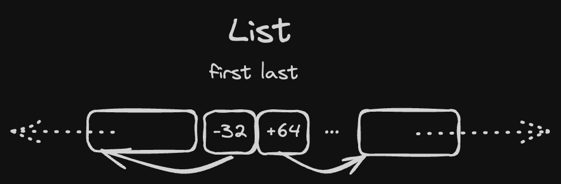

Memory usage optimisations
First, it should be possible to allocate temporary data on a different temporary arena (let's call it scratch). It can be passed to parser-tokenizer-whatever-else-needs-memory and all one-time objects could be written there instead.
If we are fully cofident about the lifespan of these temporary objects we can go further and implement it as a circular buffer, so that old temporary data will be automatically overwritten with new temporary data.
Second, instead of using pointers we can use relative offsets. A single offset can be just a 32-bit signed integer, which allows us to:
- have "links" in our data that are able to index 2GB left and 2GB right on arena (technically everything is 8-byte-aligned, so we can count in "words" and have 16GB both ways)
- take twice less space (unless they have to be zero-padded because there are no fields to fill the gap)

These two i32 offsets can be packed in a single word:
#![allow(unused)] fn main() { #[repr(transparent)] struct PairOfOffsets<T> { // to enforce alignment = 8 packed: Cell<usize> marker: core::marker::PhantomData<T> } impl<T> PairOfOffsets<T> { fn set_first(&self, ptr: *T) { let [_, last]: [i32; 2] = transmute(self.packed.get()); let new_first = ptr.offset_from(self as const *Self); self.packed.set(transmute([new_first, last])) } fn first<'b>(&self) -> Option<&'b T> { let [first, _]: [i32; 2] = transmute(self.packed.get()); first.as_ref() } } }
It can be zero-initialized (in such case both refs are None) and it takes only 8 bytes.
List<T>with this optimisation takes 1 word instead of 2HashMapcan have an array of 2PairOfOffsetsinstead of 4 pointers to maintain a tree structure (which saves us two words per node)